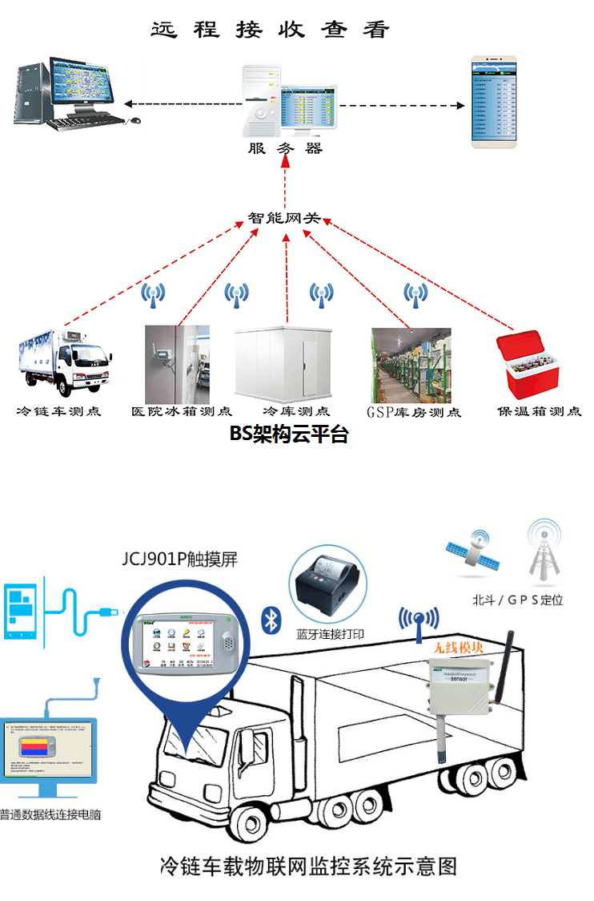

方案简介
冷链物流车辆运输是现在冷链物流行业供应链管理的核心环节之一，充当了上下游企业的疏通功能，其运作效果直接影响到供应链的整体效率，因此冷链物流车辆监控在冷链物流企业中起到一个关键性的作用，也作为其现代化信息管理的关键环节。冷链物流重要的就是做到仓储和运输的温度全程监控。 冷链物流急速扩大成为一个规模庞大的、设备专业性强、涉及行业广泛、从业人员众多的产业。但随之在规范运作、经营效益、行业管理等方面，也出现了诸多急需解决的问题。 另一方面，现阶段我国还缺乏行之有效的食品药品冷链物流的管理方法，原有监测技术手段滞后是最大的技术瓶颈。人工测量和纸面记录、无统一数据系统支持，实时性差、监管脱节；取证困难、无法确定责任；无法进行预警、损失率大等。北京中程高科网络技术有限公司专门为冷链企业定制了一套行业解决方案， 通过各类冷链运输车辆实时回传采集数据、视频图像，管理部门可实时了解所属车辆行驶状况、位置信息等相关情况，实现客户和合作伙伴间业务的高度协同，增强物流服务的应变和监控能力，可提高物流效率，降低成本，实现对物流运作的统一调度与监控，实现运输路线最优、库存质量最佳、货物组配最合理、物流成本最低的目标，为客户提供及时准确的冷链物流服务，为冷链企业提供了完美的车联网解决方案。
方案优势
系统采用物联网技术，采用JCJ901P车载智能终端+无线传感器探头+BS框架组建的web平台软件，实现如生鲜食品、冷链药品等的运输、存储环境的实时温 湿度监控公众平台。实现，运输方、存储方、托运方、货物接收方、国家监管方等多方同步查看权限内的整个冷链环节的温湿度数据及监测对象、冷链车具体地理位置。
功能明细
•全面，而完整的方案设计
本方案的设计将按照全面完整的原则进行，除了包括硬件监控设备，和软件实时视频监控外，还特别注重了车辆的特殊性，将冷链物流车的温度置于重要的监控内容，这点是区别于统一的视频监控方案，做到更加细致，复合行业需求。
•以客户为中心，为客户解决实际问题
冷链车辆物流车载监控系统跟目前应用较广泛使用的GPS系统相比，车载监控系统不仅能跟踪记录车辆的地理位置，还能对货车的运行状况和驾驶员的工作进行全过程监控和录像，防止司机违规操作，在发生货物丢失或者油料盗窃时作为区分责任的有力证据，监督驾驶员在树立公司良好形象同时维护公司和客户的利益。借助3G无线监控系统，管理人员能够通过网络实时了解货车运行的地理位置、运行状态，保证车辆与货物的安全可控性，提升物流企业的竞争力，通过紧急报警按钮，驾驶员在遇到突发事件能够在第一时间与警方联系，根据货车的运行情况迅速有效的布置警力，力图避免重大事件发生。
•整体规划
冷链物流车辆无线视频监控系统为企业提供了运营级的整体服务解决方案，不管企业有多复杂的分级企业或分部，都可以系统梳理，让系统来同意管理。
•开放性和标准化
由于物流系统的使用不仅仅局限在公司内部， 往往需要和供应链伙伴，包括客户，分供方进行信息共享，物流各个环节之间也需要密切的信息交流管道。所以物流系统产品需要在结构上真正实现开放，支持国际开放式标准，满足客户二次开发的要求。
•灵活的高可扩展性
产品的选择，系统设计和开发需要兼顾现有需求和系统扩展能力，在客户需求发生改变的时候，能够进行灵活的扩充和调整，满足未来的应用要求。
•安全可靠性
提供强大的管理机制和控制手段，确保系统和信息的安全。
系统构成
系统集成了卫星定位，地理信息系统，3G网络通信，视频处理等多项时代先进技术，主要由三部分组成，即车载DVR终端，温度传感器、中心服务器和监控中心CMS平台。即车载DVR负责本地的录像存储，通过3G网络连接中心服务器，将视频数据，GPS定位信息，车厢温度、报警信息，车辆行驶记录等汇报服务器，服务器则将信息进行分类整理，通过对车辆状况的实时处理，并下发对车辆的调度指令，实现CMS平台对车载主机的远程管理与信息的综合交互。
